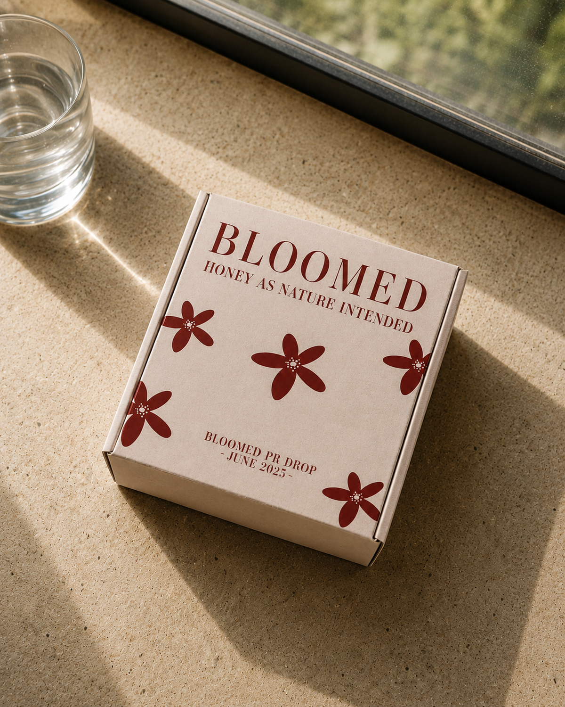
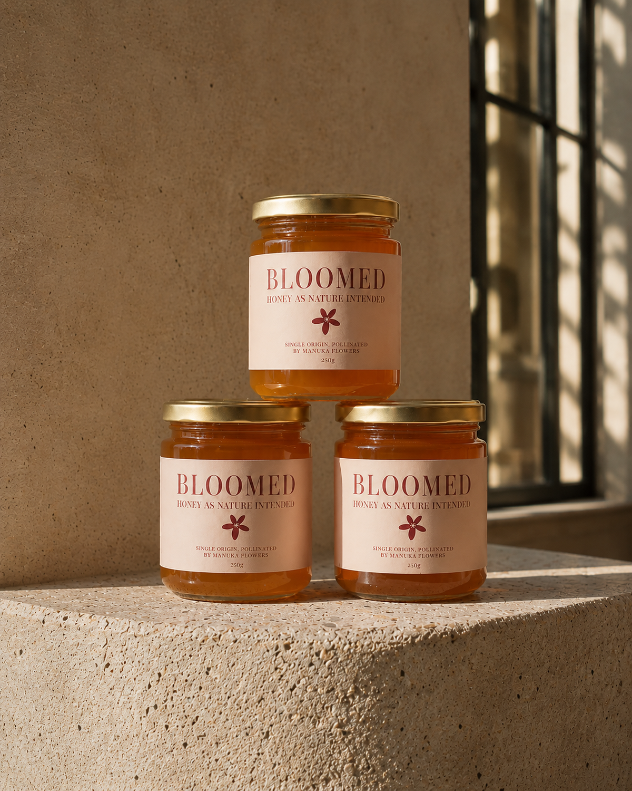
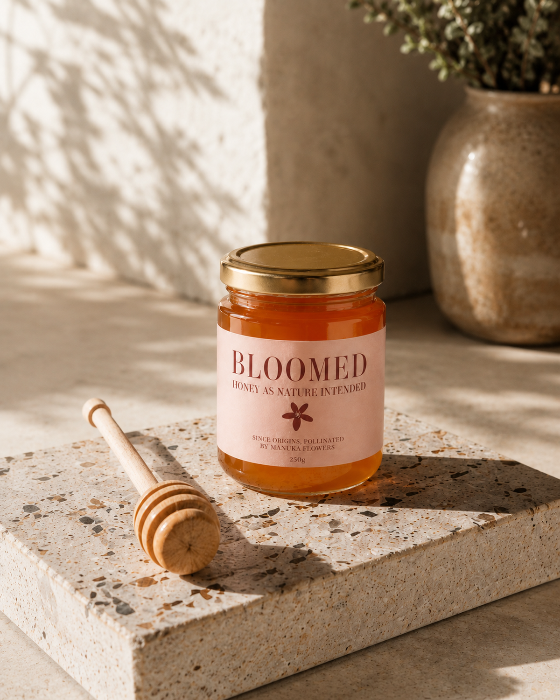
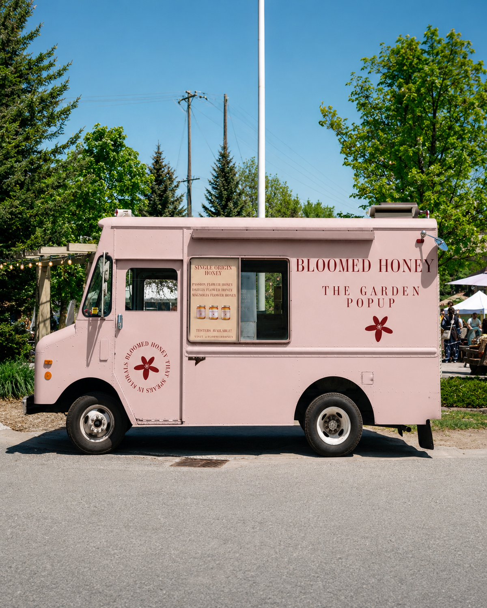
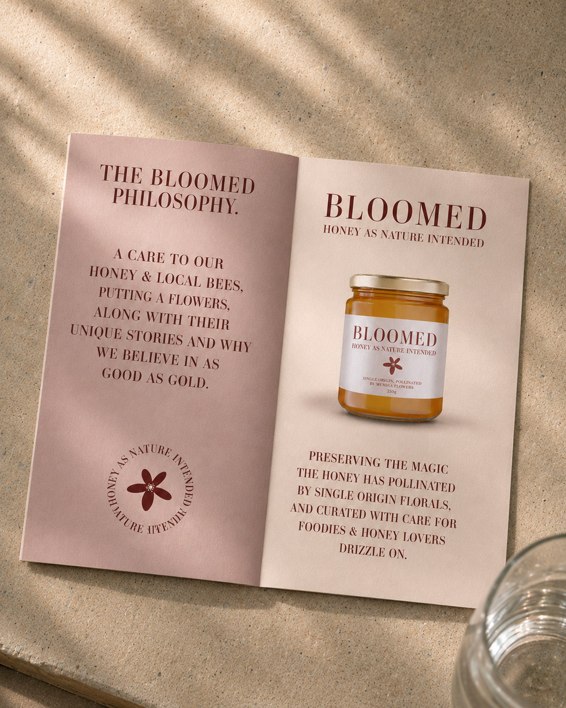
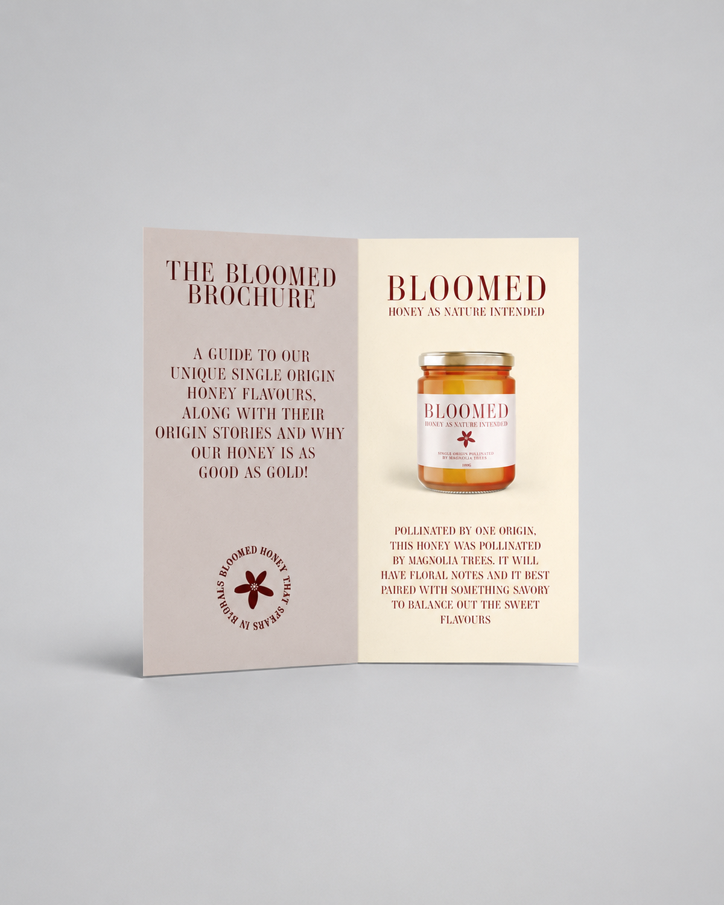
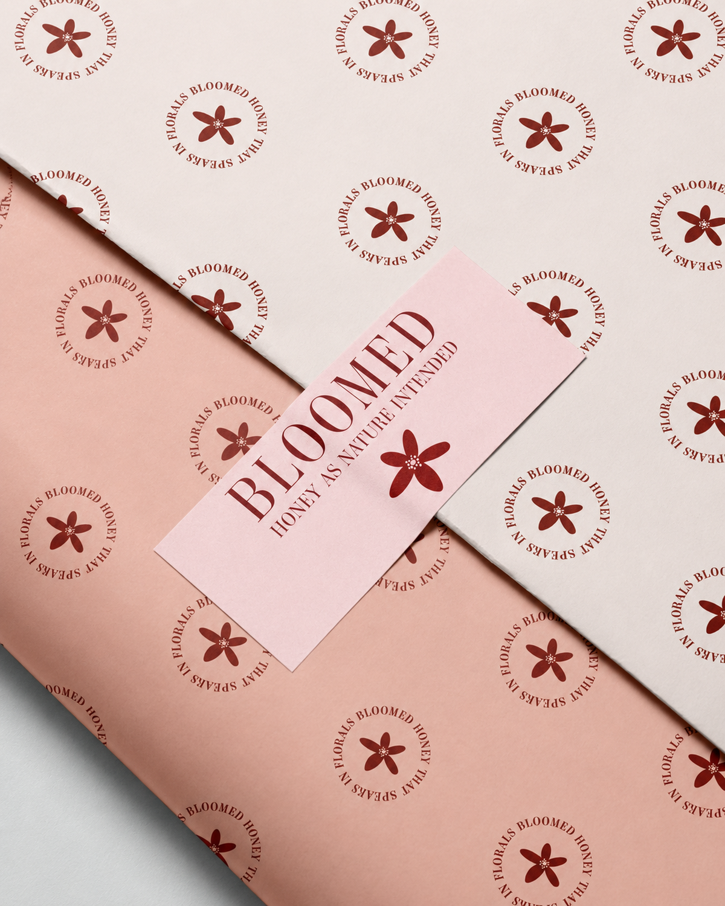
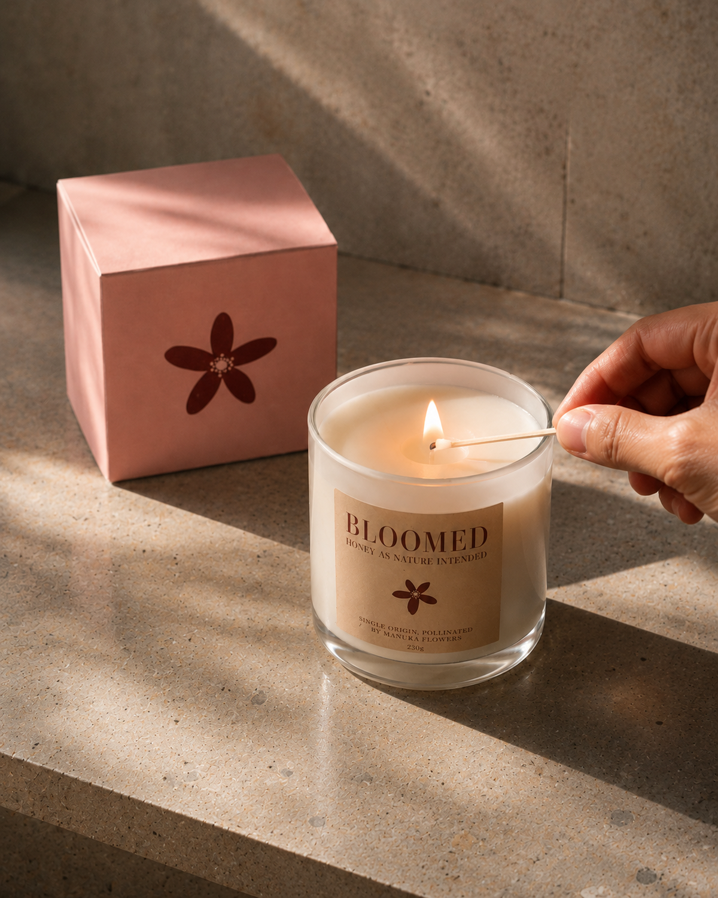

Bloomed Honey
Bloomed transforms honey into a premium botanical experience, where each jar tells the story of bees, flowers and place. The brand reimagines honey as a slow-crafted, sensory experience, with every product connected to the unique flavour profile of the flowers pollinated.








- Brand Identity
- Packaging Design
- Print Design
- Experience Design
- Logo and flower symbol
- Honey jar packaging and PR box
- Brochure and wrapping paper
- Candle and garden pop-up truck
2024
Create a premium honey brand that elevates single-origin honey through storytelling, packaging and experience, while celebrating the natural relationship between bees, botanicals and landscape.
Reimagine honey as a single-origin experience. Rather than presenting honey as a generic sweetener, the brand highlights the unique floral sources behind each jar, turning flavour into a story of pollination, place and care.
Calm, elegant and nature-led. A soft earthy palette, warm honey tones and refined serif typography create a sense of quiet luxury. Close-up textures, natural light and generous white space let the product and story breathe.
A garden pop-up truck and candle extension bring Bloomed into physical space, creating moments where customers can discover, taste and connect with the brand world.